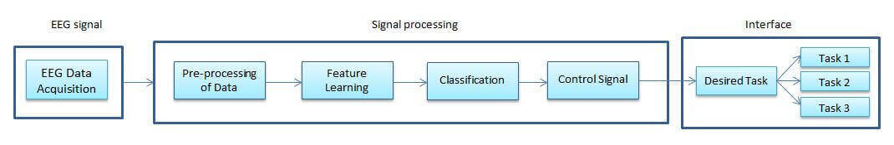
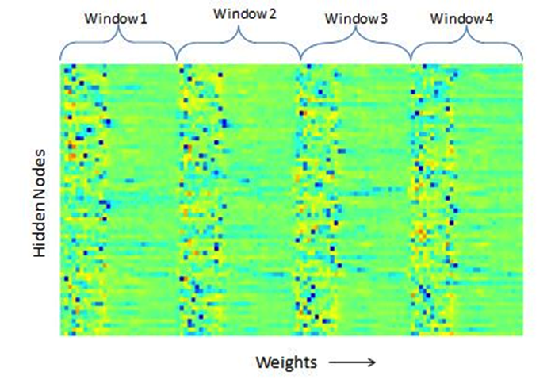
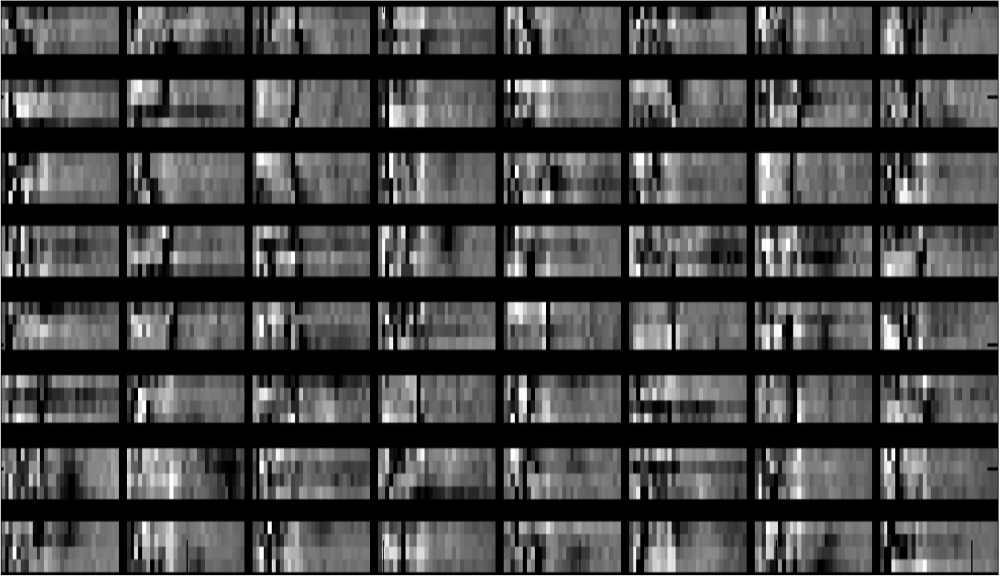
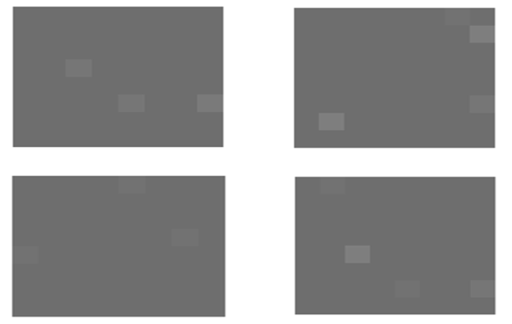

BCI
Introduction
Under the guidance of Dr. Amit Sethi, Dept. of EEE, IIT Guwahati

Brain computer interfaces (BCI) allows people to communicate with their environment and control prosthetics or other devices using their brain activity solely. For people who are severely paralyzed, extremely amputated and with late-stage brain diseases BCI serves as a promising tool to aid them in their daily routines. Apart from medical use, BCI finds potential applications in fields of virtual reality, multimedia and related fields
Many techniques are available to measure the brain activity, among them ElectroEncephalography (EEG) is widely used because of its non-invasiveness, lower cost and high temporal resolution. Due to advancements in neurotechnology, consumer grade devices like Emotiv Epoch, Neurosky and others to measure EEG signals at affordable cost are available at cheaper price, BCI will find potential appications in day to day activities.
Motivation
EEG data is of very high dimension, thus commonly employed methods for reduction of features after performing required transformations like hand selection (and ICA) might miss hidden patterns affecting the overall classification.
So using a feature learning algorithm that can automatically learn a better feature representation than hand selected features might be clever and may produce better results.
One such feature learning algorithm is sparse autoencoder. It is an unsupervised learning algorithm trained by using back propagation, setting target values equal to input. By posing constraints on the number of hidden nodes it can discover interesting structures, patterns in input data.
Feature learning
Feature vector [4 windows of EEG spectrum] is then used to train a sparse autoencoder. Visualizing the optimum weights obtained after training the autoencoder can provide fascinating, useful information on data. The results and analysis of feature learning are shown in figure below.
The weights of autoencoder network give insight into what it has learnt about the input data. White regions indicate the features autoencoder is concentrating upon, darker regions indicate features it is masking, gray regions are the features that are present most commonly and hence are not much useful for classification. So, white and dark regions indicate the features which can be used for classification and are significant.

The data used for training sparse auto encoder was of four different classes (labels).
Visualising the activations of different nodes of sparse auto encoder for different classes is show in the adjoining image.
Activation of hidden nodes for different classes which have activations at different nodes indicating that autoencoder has learned features which help in distinguishing classes.
The average error per node observed for predicting identity is 0.022 (2.2%) which indicates that the autoencoder has been trained well.
Other Aspects
We have tried the above techniques on BCI 2000 Dataset and the data we have generated using emotiv epoch by devising our own experimentaion. To know about the experimentation, softwares developed and more mail me: gouthampatley@gmail.com
The whole experience was truly a lot of fun.